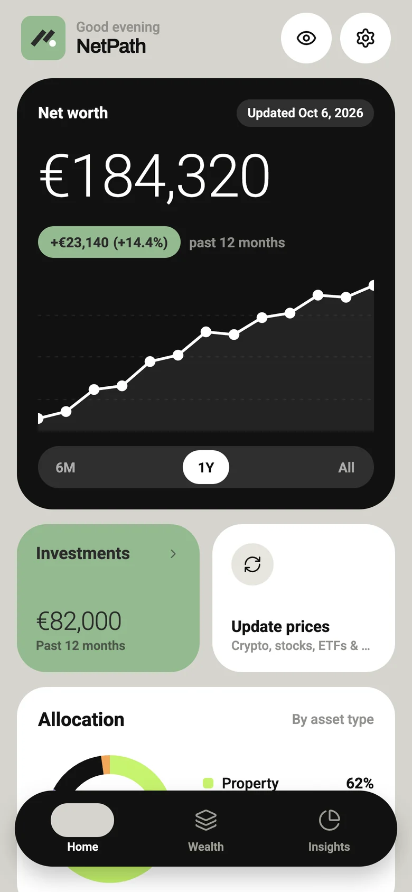
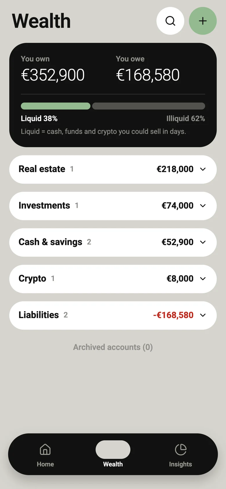
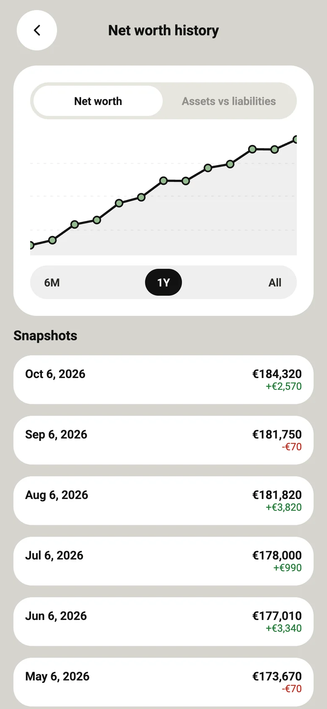
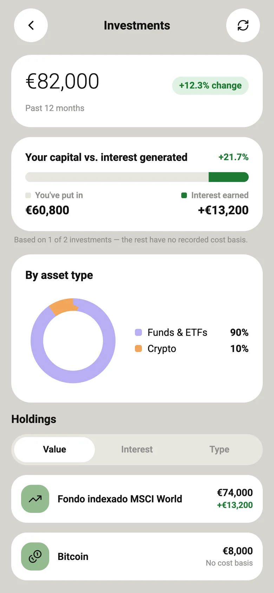

Claridad total en un solo número
Cuentas, inversiones, inmuebles, vehículos, hipotecas y tarjetas sumados y restados. Tu patrimonio neto, sin cálculos.
Lo que tienes 352.900 €
Lo que debes 168.580 €
Patrimonio neto 184.320 €
NetPath suma tus cuentas, inversiones, inmuebles y vehículos, resta hipotecas y préstamos, y te muestra tu patrimonio neto. No es una app de gastos ni te pide acceso a tu banco.

No es falta de dinero ni de ganas. Es que nadie te enseña la foto completa.
Banco, exchange, plan de pensiones, la casa… y ninguna app te lo junta.
Empiezas con ilusión un domingo y a las tres semanas ya está desfasada.
Sin una referencia clara, es difícil saber si de verdad avanzas o solo te mueves.
La hipoteca y las tarjetas cuentan, pero casi nunca aparecen al lado de lo que tienes.
Sin una cifra clara, cada decisión con tu dinero se toma a ciegas.
Una app sencilla para ver todo tu patrimonio, lo que tienes y lo que debes, en una cifra siempre actualizada. Registras tus cuentas en unos minutos y NetPath sigue el precio de tus inversiones. Sin bancos conectados y con tus datos en tu móvil.
Datos de ejemplo.
Lo que ganas cuando todo tu patrimonio está en un solo sitio.
Cuentas, inversiones, inmuebles, vehículos, hipotecas y tarjetas sumados y restados. Tu patrimonio neto, sin cálculos.
Una gráfica a 6 meses, 1 año o todo el histórico, para saber si de verdad avanzas.
Activa los precios en vivo para criptomonedas, acciones, ETFs y materias primas. Solo se envía el símbolo, nunca tus datos.
Tú decides qué apuntar y cuándo. Sin contraseñas bancarias y sin intermediarios.
Sin cuenta, sin servidor para tus datos financieros, sin anuncios ni analíticas. Protégela con Face ID o huella.
Sin formularios eternos ni claves bancarias.
Cuentas, inversiones, inmuebles, vehículos, hipotecas y tarjetas. Un par de minutos con lo que ya sabes de memoria.
Si activas los precios en vivo, eliges el ticker y la cantidad que tienes, y el valor se calcula solo.
Tu cifra neta, cómo evoluciona mes a mes y qué aporta cada parte. Revísalo cuando quieras o con un recordatorio.
Cuatro pantallas que responden a las preguntas que importan.



Capturas con datos de ejemplo. La app está por ahora en inglés.
La versión gratuita ya te da la foto completa. Pro es para quien tiene el patrimonio repartido en muchos sitios.
0 €para siempre
24 €al año · 2 € al mes
o 3 € al mes si prefieres pagar mensualmente
Precios previstos para el lanzamiento. Las suscripciones se cobran y se gestionan desde App Store y Google Play, y puedes cancelarlas cuando quieras. Las estimaciones fiscales son orientativas y no constituyen asesoramiento.
Todo lo que tienes y todo lo que debes, en una cifra actualizada y privada.
Empieza gratis. Cancela cuando quieras.